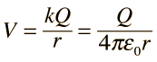
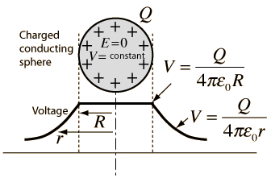

The use of Gauss' law to examine the electric field of a charged sphere shows that the electric field environment outside the sphere is identical to that of a point charge. Therefore the potential is the same as that of a point charge:

The electric field inside a conducting sphere is zero, so the potential remains constant at the value it reaches at the surface:
When a conductor is at equilibrium, the electric field inside it is constrained to be zero.

Since the electric field is equal to the rate of change of potential, this implies that the voltage inside a conductor at equilibrium is constrained to be constant at the value it reaches at the surface of the conductor. A good example is the charged conducting sphere, but the principle applies to all conductors at equilibrium.